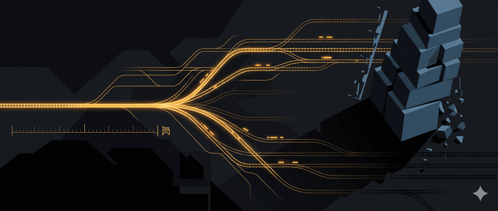

ĐƯỜNG SẮT CAO TỐC TRUNG QUỐC: NGHỊCH LÝ CỦA QUY MÔ
Bài này đáng lẽ phải viết lâu rồi để hoàn thiện nốt series đường sắt cao tốc từ năm ngoái mà bận quá chưa viết xong được. Đến giờ thì Vin vừa mới khởi công đường sắt cao tốc Hà Nội-Hạ Long nên cũng đã đến lúc phải trả bài.
Bức tranh đường sắt thế giới không thể đầy đủ nếu thiếu đi tay chơi lớn nhất là Trung Quốc, một quốc gia vốn dĩ xuất phát sau nhưng nay lại dẫn đầu và vượt xa so với các player khác. Đường sắt Trung Quốc là một câu chuyện đầy màu sắc kịch tính, nó vừa phản ánh sức mạnh của người khổng lồ Trung Quốc đang trỗi dậy đồng thời cũng bộc lộ những điểm yếu chết người của hệ thống tạo ra siêu cường này.
Năm 2004, một đoàn kỹ sư Trung Quốc đến Nhật Bản học cách vận hành Shinkansen, đoàn tàu cao tốc huyền thoại đã chạy hơn bốn thập kỷ mà chưa một lần gây chết người do va chạm hay trật bánh. Họ ký hợp đồng chuyển giao công nghệ với bốn nhà sản xuất lớn nhất thế giới là Kawasaki của Nhật, Alstom của Pháp, Siemens của Đức, Bombardier của Canada. Điều kiện rất tường minh rõ ràng là đổi thị trường lấy công nghệ. Trung Quốc mở cửa thị trường đường sắt khổng lồ cho các nhà sản xuất nước ngoài, đổi lại họ phải chuyển giao bản quyền sản xuất. Cam kết kèm theo: “TQ chỉ sử dụng trong nước, không xuất khẩu.”
Sáu năm sau, tức chỉ sáu năm kể từ khi tiếp nhận thiết kế Shinkansen E2 từ Kawasaki, CRRC Sifang của Trung Quốc đã tự sản xuất được đoàn tàu CRH2A mà không cần linh kiện nước ngoài. Mười năm sau nữa, Trung Quốc dẫn đầu việc soạn thảo toàn bộ 13 tiêu chuẩn quốc tế cấp hệ thống về đường sắt cao tốc do Liên minh Đường sắt Quốc tế (UIC) thiết lập. Đoàn tàu thử nghiệm thế hệ mới CR450 đạt tốc độ tương đối 896 km/h khi hai tàu chạy ngược chiều giao nhau.
Từ người đi học thành người viết sách giáo khoa. Chỉ trong hai thập kỷ.
Và để hiểu về câu chuyện này chúng ta sẽ quay ngược dòng thời gian về 24 năm trước, tròn đúng 2 giáp. Cuối năm 2002, trên tuyến đường sắt thử nghiệm giữa Thẩm Dương và Tần Hoàng Đảo ở vùng đông bắc Trung Quốc, một đoàn tàu mang tên Trung Hoa Chi Tinh (China Star) lao đi với tốc độ 321 km/h, lập kỷ lục tốc độ tàu Trung Quốc. Trong buồng lái và dọc hành lang kỹ thuật, đội ngũ kỹ sư do tổng công trình sư Lưu Hữu Mai dẫn đầu nín thở theo dõi mọi thông số. Họ đã dồn nhiều năm phát triển đoàn tàu này từ con số không, 130 triệu nhân dân tệ ngân sách nhà nước, toàn bộ do người Trung Quốc tự thiết kế, tự chế tạo, không mua một bản quyền nào từ nước ngoài.
Giấc mơ của Lưu Hữu Mai rất rõ ràng, đó là chứng minh rằng kỹ sư và thợ lành nghề Trung Quốc có đủ năng lực tự mình xây tàu cao tốc đẳng cấp thế giới, từ trên xuống dưới, không cần các tập đoàn đa quốc gia. Chỉ vài năm sau, đoàn tàu ấy bị xếp xó. Đội ngũ kỹ sư bị giải tán. Toàn bộ con đường tự lực phát triển bị bỏ rơi.
Và hai thập kỷ sau ngày China Star bị khai tử, Trung Quốc dẫn đầu thế giới về đường sắt cao tốc với mạng lưới hơn 50.000 km, nhiều hơn tất cả các nước khác có đường sắt cao tốc gộp lại. Họ cũng xuất khẩu công nghệ sang ba châu lục, và soạn thảo tiêu chuẩn quốc tế cho toàn ngành.
Câu chuyện giữa hai thời điểm đó, từ đoàn tàu bị bỏ rơi đến vị thế dẫn đầu toàn cầu, thường được kể như một chiến thắng của ý chí chính trị, của đầu tư lớn, của quy mô dân số. Nhưng nếu dừng ở đó, ta bỏ qua phần quan trọng nhất. Đường sắt cao tốc Trung Quốc không phải câu chuyện “dám nghĩ lớn,làm lớn thì thắng lớn.” Nó là câu chuyện về một cấu hình hệ thống mà cùng một đặc tính tạo ra sức mạnh chưa từng có, đồng thời tạo ra những lỗ hổng chưa ai biết đáy sẽ là đâu. Hiểu được nghịch lý đó, ta hiểu nhiều hơn câu chuyện đường sắt. Ta hiểu cách các hệ thống phức hợp vận hành, cách chúng tạo ra sức mạnh và gieo mầm suy thoái bằng cùng một cơ chế.
Cỗ máy không ai xây nổi
Cuối năm 2025, mạng đường sắt cao tốc Trung Quốc đã vượt mốc 50.400 km, chiếm hơn 70% trong tổng số khoảng 65.000 km đường sắt cao tốc toàn cầu và 97% thành phố có trên 500.000 dân đã được kết nối. Năm 2024, hệ thống phục vụ 4,26 tỷ lượt khách, tăng 4,2% so với năm trước, với kỷ lục 23,13 triệu lượt trong một ngày. Tức trung bình cứ mỗi giây lại có 135 người bước lên tàu cao tốc ở đâu đó trên lãnh thổ Trung Quốc. Mục tiêu tiếp theo là 60.000 km vào năm 2030, nằm trong tổng thể 180.000 km mạng lưới đường sắt quốc gia.
Không quốc gia nào từng xây được hạ tầng ở quy mô này, với tốc độ này. Và điều đáng nói không chỉ là số kilomet, mà là chi phí trên mỗi kilomet được xây. Ngân hàng Thế giới năm 2019 đã khảo sát chi tiết và nhận thấy chi phí xây dựng đường sắt cao tốc ở Trung Quốc cho tuyến thiết kế tốc độ tối đa 350 km/h dao động quanh 17 đến 21 triệu USD mỗi km. Con số tương đương ở châu Âu là 25 đến 39 triệu, và dự án California High-Speed Rail ở Mỹ đội lên tới 56 triệu. Trung Quốc xây cùng một km đường sắt cao tốc với chi phí chỉ bằng một phần ba đến một nửa so với các nước phát triển.
Tại sao lại rẻ đến vậy? Ngân hàng Thế giới phân tích rằng chi phí đơn vị thấp hơn là kết quả của nhiều yếu tố cộng hưởng, đó là do sự phát triển nhiều nguồn cung ứng cạnh tranh trong nước cho mọi khâu, áp dụng cơ giới hóa ở quy mô lớn, và khối lượng dự án khổng lồ cho phép khấu hao vốn đầu tư thiết bị xây dựng đắt tiền qua nhiều công trình. Quy trình sản xuất tấm ray nhập từ Đức nhưng sản phẩm Trung Quốc rẻ hơn khoảng một phần ba nhờ khối lượng sản xuất và chi phí lao động thấp. Chi phí xây hầm đường sắt cao tốc ở Trung Quốc chỉ khoảng 10 đến 15 triệu USD mỗi km, bằng một phần nhỏ so với các nước khác.
Và có một yếu tố ít ai nói thẳng, chi phí thu hồi đất và tái định cư ở Trung Quốc dưới 8% tổng chi phí dự án, trong khi ở California riêng khoản này đã khoảng 10 triệu USD mỗi km, chiếm 17,6% tổng chi phí. Điều này không phải vì đất ở Trung Quốc rẻ hơn theo giá thị trường, mà vì cấu trúc quyền lực cho phép thu hồi đất nhanh với đền bù theo giá nhà nước, một “lợi thế chi phí” có chi phí xã hội ẩn mà bảng cân đối tài chính không ghi nhận.
Báo cáo của Ngân hàng Thế giới kết luận rằng chính quy mô tuyệt đối của chương trình và cam kết vững chắc của nhà nước Trung Quốc đã giải phóng năng lực kỹ thuật và sản xuất của toàn bộ nền kinh tế. Việc công bố kế hoạch đáng tin cậy xây 10.000 km trong sáu đến bảy năm đã kích hoạt cộng đồng xây dựng và cung ứng thiết bị. Được đảm bảo khối lượng rất lớn, các công ty nhanh chóng nâng công suất và đầu tư vào đổi mới.
Tại sao Trung Quốc làm được điều đó trong khi những nền kinh tế giàu hơn, có công nghệ sớm hơn, lại không? Câu trả lời không nằm ở một yếu tố đơn lẻ nào. Nó nằm ở cách các yếu tố ghép vào nhau, tạo thành một cấu hình mà không quốc gia nào khác có thể sao chép.
Ba trụ cột và vòng xoáy tăng tốc
Hãy hình dung một cỗ máy có ba bộ phận lồng vào nhau, mỗi bộ phận vừa là động cơ vừa là điểm mù.
Bộ phận thứ nhất là quyền lực tập trung. Trong một thể chế mà nhà nước kiểm soát đất đai, ngân hàng, và bộ máy hành chính từ trung ương đến địa phương, việc ra quyết định xây một tuyến đường sắt xuyên qua nhiều tỉnh thành không cần đàm phán với hàng chục chủ đất tư nhân, không cần chờ phán quyết tòa án, không cần vận động cử tri chấp thuận. Đường sắt California mất hơn hai thập kỷ tranh luận mà vẫn chưa hoàn thành.
Trung Quốc xây xong tuyến Bắc Kinh đến Thượng Hải dài 1.318 km trong vòng ba năm. Khoảng cách tốc độ đó không phải do công nhân Trung Quốc xây nhanh hơn, mà do cấu trúc quyền lực cho phép ra quyết định mà không phải trả chi phí giao dịch chính trị mà các nền dân chủ phải trả. Chiều thuận rõ ràng, tốc độ, quy mô, sự nhất quán. Chiều nghịch cũng rõ không kém, quyết định sai không bị phát hiện sớm, vì không có lực nào trong hệ thống đủ mạnh để ngăn cản điều tệ hại có thể diễn ra.
Bộ phận thứ hai là tài chính nhà nước. Vốn đầu tư đến từ ba nguồn gồm có
Ngân hàng quốc doanh chiếm 40 đến 50%, cho vay theo chỉ đạo chính sách chứ không chỉ theo phân tích rủi ro tín dụng.
Trái phiếu đường sắt chiếm khoảng 40%, phát hành với bảo lãnh ngầm của nhà nước, tức là nhà đầu tư tin rằng chính phủ sẽ không bao giờ để tập đoàn này vỡ nợ nên sẵn sàng chấp nhận lãi suất thấp mà không đòi hỏi minh bạch tài chính.
Ngân sách chính quyền địa phương bổ sung 10 đến 20% còn lại, thường từ nguồn bán quyền sử dụng đất.
Không có quỹ đầu tư tư nhân nào đòi nhìn bảng cân đối lợi nhuận. Không có cổ đông nào hỏi “bao giờ hoàn vốn?” Dòng vốn chảy theo quyết định chính trị, không theo tín hiệu thị trường. Vốn có thể được huy động ở quy mô lớn mà không nền kinh tế thị trường nào làm nổi, nhưng đồng thời cũng chảy đến những nơi mà bất kỳ nhà đầu tư tỉnh táo nào cũng sẽ từ chối.
Bộ phận thứ ba là cơ chế khuyến khích chính trị, và đây có lẽ quan trọng nhất. Quan chức địa phương được đánh giá và thăng tiến phần lớn dựa trên tăng trưởng GDP tại địa phương mà họ lãnh đạo. Một dự án đường sắt cao tốc bơm ngay lập tức hàng tỷ nhân dân tệ vào nền kinh tế qua xi măng, thép, lao động, dịch vụ hậu cần, bất động sản quanh nhà ga.
Lợi ích chính trị của họ đến tức thì và cũng là lợi ích cá nhân. Nợ nần thuộc về tương lai và thuộc về tập thể. Đây là nguyên mẫu hệ thống mà Peter Senge gọi là “chuyển gánh nặng” sang bên khác, giải pháp ngắn hạn tạo hiệu ứng tức thì nhưng gánh nặng thực sự bị đẩy sang tương lai. Hội đồng Nhà nước đã phải cảnh báo về “cạnh tranh mù quáng, xây dựng lạc hậu và dư thừa” giữa các chính quyền địa phương, nhưng cảnh báo từ trung ương gặp kháng lực từ chính cấu trúc khuyến khích mà trung ương đã thiết kế.
Toàn bộ cỗ máy này cần được đặt trong bối cảnh lịch sử và đường sắt cao tốc Trung Quốc thực chất là phản ứng “Keynesian đường sắt”, một gói kích thích kinh tế khổng lồ được tài trợ bằng nợ, đặc biệt trong và sau cuộc khủng hoảng tài chính toàn cầu 2008. Khi nền kinh tế thế giới co lại, Trung Quốc cần một cỗ máy hút lao động và tiêu thụ nguyên vật liệu ở quy mô khổng lồ. Mục tiêu kinh tế vĩ mô (giữ GDP tăng trưởng) trùng khớp hoàn hảo với mục tiêu chính trị (thăng tiến quan chức) trùng khớp với mục tiêu hạ tầng (hiện đại hóa giao thông), tạo ra sự hội tụ mạnh mẽ đến mức không có lực nào đủ mạnh để hỏi “nhưng liệu tất cả những km này có ai đi không?”
Ba bộ phận này tạo ra vòng phản hồi tăng cường theo logic quyền lực tập trung cho phép ra quyết định nhanh, quyết định nhanh huy động được tài chính, tài chính dồi dào khởi động dự án lớn, dự án lớn tạo GDP, GDP cao củng cố vị thế chính trị, vị thế mạnh thúc đẩy thêm quyết định mới. Vòng xoáy cứ thế quay nhanh hơn, mỗi vòng khuếch đại vòng trước, và hệ thống sản sinh ra kilomet đường ray với tốc độ chưa từng thấy trong lịch sử hạ tầng giao thông nhân loại.
Giấc mơ bị bỏ rơi và con đường tắt
Nhưng trước khi vòng xoáy ấy bắt đầu quay, hãy cùng nhìn lại câu chuyện bị chôn lấp dưới lớp bụi của chính sách mới.
Trước China Star còn có cả một gia đình tàu nội địa. Giữa 1999 và 2003, các viện đường sắt Trung Quốc đã sản xuất thành công bộ “422” tức là bốn tàu cao tốc Blue Arrow, Vanguard, China Star và Changbaishan và hai đầu máy điện cao tốc Aomi và Tiansuo, hai đầu máy diesel Western Light và DF8CJ.
Tám sản phẩm, tất cả do Trung Quốc tự nghiên cứu, tự thiết kế, tự chế tạo, không mua một bản quyền nào từ nước ngoài. China Star là ngôi sao sáng nhất trong số đó, đạt tốc độ thử nghiệm 321 km/h, được thiết kế cho 726 hành khách, sở hữu trí tuệ hoàn toàn của Trung Quốc.
Nhưng China Star có vấn đề nghiêm trọng, đó là độ tin cậy. Trục trặc vận hành xảy ra thường xuyên, chi phí bảo trì cao, và tại một diễn đàn chuyên ngành năm 2003, các chuyên gia kết luận thẳng rằng có “khoảng cách đáng kể” giữa China Star và tàu tiên tiến nước ngoài “ở cấp độ kỹ thuật, cũng như về độ hoàn thiện và độ tin cậy sản phẩm.” China Star có thể chạy nhanh trong vài chuyến thử nghiệm, nhưng chưa đủ tin cậy để vận hành thương mại hàng ngày, hàng trăm chuyến, năm này qua năm khác, cái mà ngành đường sắt gọi là “độ chín sản phẩm” (product maturity).
Năm 2003, Lưu Chí Quân lên làm Bộ trưởng Đường sắt. Ông nhìn vào China Star và thấy một sự thật khó nuốt, tự lực phát triển cho đến khi đủ tin cậy để chạy thương mại có thể mất thêm 10 đến 15 năm nữa, trong khi Trung Quốc cần đường sắt cao tốc ngay lập tức để phục vụ tăng trưởng kinh tế. Lưu Chí Quân, người sau này được gọi là “cha đẻ của đường sắt cao tốc Trung Quốc” và cũng là người bị bắt năm 2011 vì tham nhũng, đưa ra quyết định lịch sử là bỏ toàn bộ hướng tự lực nghiên cứu, chuyển sang chiến lược “đổi thị trường lấy công nghệ”, mua bản quyền từ chính những tập đoàn đa quốc gia mà đội ngũ Lưu Hữu Mai từng mơ ước đánh bại.
Khẩu hiệu của Lưu Chí Quân rất ngắn gọn: “Nắm bắt cơ hội, xây thêm đường sắt, và xây cho nhanh.” Câu đó không có chỗ cho từ “tự lực” hay “nghiên cứu.”
Đội ngũ của Lưu Hữu Mai chưa bao giờ thực sự có cơ hội chứng minh mình, và các cuộc thử nghiệm China Star về bản chất trở nên vô nghĩa. Cuối năm 2006, Kim Lỗ Trung, nguyên trưởng ban cán bộ kỹ thuật tại Ủy ban Khoa học Kỹ thuật Nhà nước, gửi đơn khiếu nại chính thức: “Kết quả nghiên cứu tự lực đang ở ngưỡng khả thi thương mại, nhưng do hành động của lãnh đạo hiện tại ở Bộ Đường sắt, con đường tự lực đổi mới đã bị chặn, tương lai của ‘422’ không chắc chắn và các thành tựu công nghệ lớn có nguy cơ bị đánh mất.” Không ai nghe. Chính sách mới đã chạy quá xa để quay đầu.
Năm 2004, hợp đồng chuyển giao công nghệ được ký với Kawasaki, Alstom, Siemens, Bombardier. Điều kiện tường minh là các tập đoàn nước ngoài phải liên doanh với đối tác Trung Quốc, lắp ráp tàu tại nhà máy Trung Quốc, đào tạo kỹ sư Trung Quốc, và cung cấp bản vẽ thiết kế cùng quy trình sản xuất. Đổi lại, họ được tiếp cận thị trường đường sắt lớn nhất thế giới. Hàng tỷ nhân dân tệ chảy sang các tập đoàn đa quốc gia. China Star bị đẩy xuống một tuyến phụ, giới hạn tốc độ 160 km/h, rồi biến mất khỏi mọi cuộc thảo luận.
Và con đường tắt cho kết quả nhanh đến kinh ngạc. Năm 2007, dòng tàu CRH (China Railway High-speed, thương hiệu “Hòa Hài”) bắt đầu lăn bánh trên toàn quốc, CRH1 dựa trên công nghệ Bombardier, CRH2 dựa trên Shinkansen E2 của Kawasaki, CRH3 dựa trên ICE 3 của Siemens, CRH5 dựa trên Pendolino của Alstom. Tốc độ 200 đến 250 km/h. Hành khách lần đầu tiên trải nghiệm tàu cao tốc thực sự trên đất Trung Quốc. Năm 2008, tuyến Bắc Kinh đến Thiên Tân kịp khánh thành phục vụ Thế vận hội, tốc độ 350 km/h, thời gian di chuyển 30 phút cho quãng đường 120 km. Thế giới đều kinh ngạc trước tốc độ của Trung Quốc cả ở tốc độ đường sắt và tốc độ phát triển kinh tế cũng như làm chủ côngg nghệ.
Nhưng dòng tàu CRH có một vấn đề mà ít người ngoài ngành nhận ra là nó được hình thành từ bốn nhà cung cấp khác nhau, linh kiện không tương thích lẫn nhau, phụ tùng thay thế của CRH2 không lắp được vào CRH3, hệ thống tín hiệu và điều khiển mỗi dòng mỗi khác. Bảo trì đắt đỏ vì phải duy trì bốn chuỗi cung ứng riêng biệt. Và quan trọng hơn, Trung Quốc nắm được cách lắp ráp và vận hành, nhưng công nghệ cốt lõi, đặc biệt là hệ thống kéo, hệ thống phanh, và phần mềm điều khiển, vẫn nằm trong tay các tập đoàn nước ngoài. Chính Lưu Hữu Mai, nhiều năm sau, thừa nhận cay đắng: “Qua chương trình chuyển giao, quyền sở hữu trí tuệ có được cải thiện phần nào, nhưng chúng ta không hiểu công nghệ cốt lõi.”
10.000 kỹ sư và cuộc quay về tự lực
Câu chuyện China Star kết thúc ở đó, nhưng khát vọng tự chủ công nghệ thì không. Nó hồi sinh dưới hình thái khác, ở quy mô lớn hơn gấp bội, khi những giới hạn của con đường nhập khẩu bắt đầu lộ ra.
Năm 2008, Bộ Khoa học Công nghệ và Bộ Đường sắt ký thỏa thuận chung thúc đẩy đổi mới tự chủ trong lĩnh vực tàu cao tốc, khởi động dự án phát triển CRH380A, thế hệ tàu mới với tốc độ vận hành 380 km/h. Đây không còn là nỗ lực của một đội nhỏ như thời China Star. Đây là tổng huy động quốc gia.
Dự án CRH380A được đầu tư 1 tỷ nhân dân tệ (200 triệu USD), huy động 25 trường đại học, 11 viện nghiên cứu, 51 phòng thí nghiệm quốc gia, với tổng cộng 63 viện sĩ, hơn 500 giáo sư, hơn 200 nhà nghiên cứu, và hơn 10.000 kỹ sư. CSR Corporation tiến hành hơn 1.000 bài kiểm tra kỹ thuật trên 17 lĩnh vực chuyên biệt, bao gồm hiệu suất động lực học, thu dòng điện phần cung, khí động lực học, và hiệu suất kéo.
Các thí nghiệm khắt khe nhất xoay quanh đầu tàu, thành phần then chốt cả về khí động lực học lẫn công suất kéo. Đội ngũ thiết kế mũi tàu, giải bài toán cân bằng giữa giảm lực cản, giảm tiếng ồn, giảm lực nâng khí động lực, và giảm lực ngang khi hai tàu giao nhau ở tốc độ cao.
Kết quả là lực cản khí động lực tổng thể giảm 6,1% so với thế hệ trước, tiếng ồn giảm 7%, lực nâng giảm 51,7%, lực ngang tác động lên đầu tàu giảm 6,1%. Riêng phần đầu tàu, lực cản giảm tới 15,4% so với đầu tàu CRH2 nhờ thiết kế mũi tàu hoàn toàn mới. Thân tàu hợp kim nhôm siêu nhẹ chỉ nặng dưới 9 tấn, nhẹ hơn 17% so với tổng trọng lượng phương tiện. Hệ thống phanh tái sinh đạt tỷ lệ thu hồi năng lượng 95%, mỗi lần dừng đỗ trả lại gần 800 kWh điện về lưới.
Một thách thức kỹ thuật đặc biệt: vận hành trong điều kiện khắc nghiệt. Trung Quốc trải dài từ vùng nhiệt đới phía nam đến vùng đóng băng phía bắc, từ đồng bằng ven biển đến cao nguyên 3.000 mét. Tàu phải chạy tốt ở mọi nơi. Kỹ sư đã phải giải bài toán frost heaving (đất đóng băng phồng lên đẩy ray lệch vị trí) cho các tuyến phía bắc, chỉnh sửa hệ thống điện, thân tàu và phanh để đảm bảo hơi nước thoát đi trước khi kịp đóng băng. Tàu CRH380B được thử nghiệm trong mọi điều kiện thời tiết và đạt 385 km/h trong lần chạy thử mùa đông, 350 km/h vận hành bền vững.
Tháng 4 năm 2010, nguyên mẫu CRH380A tám toa lăn khỏi dây chuyền sản xuất. Tháng 9, trên tuyến Thượng Hải đến Hàng Châu, đoàn tàu mang số hiệu CRH380A-6001 đạt tốc độ tối đa 416,6 km/h. Tháng 12, trên tuyến Bắc Kinh đến Thượng Hải đang xây dựng, tốc độ thử nghiệm đạt 486,1 km/h, kỷ lục thế giới cho tàu thương mại thời điểm đó.
Một phóng viên của Đài truyền hình Tokyo (TBS) sau khi trải nghiệm CRH380A trên tuyến Bắc Kinh đến Thượng Hải nhận xét rằng theo đánh giá của ông, tàu rất tiên tiến và sở hữu nhiều công nghệ mà ngay cả dòng Shinkansen của Nhật cũng không có.
Nhưng “tự lực” thực sự nghĩa là gì?
Câu chuyện 10.000 kỹ sư rất hào hùng. Nhưng đằng sau nó là một câu hỏi chưa bao giờ được trả lời dứt khoát, và câu hỏi này quan trọng hơn bất kỳ con số tốc độ nào: CRH380A thực sự do Trung Quốc tự phát triển đến đâu?
Hai luồng ý kiến đối nghịch tồn tại đồng thời, đôi khi trong cùng một tổ chức.
Từ phía Trung Quốc, kỹ sư cấp cao La Bân tại Trung tâm Phát triển Công nghệ CSR Sifang tuyên bố không chút do dự: “Đây hoàn toàn là kết quả thiết kế tự chủ của chúng tôi. Không liên quan gì đến Bombardier hay Siemens. Không liên quan gì đến Shinkansen.” Bộ Đường sắt tuyên bố đã mua toàn bộ quyền sở hữu trí tuệ cho CRH380 với giá 1,7 tỷ nhân dân tệ, một “món hời” theo cách họ nói.
Từ phía đối diện, Chu Nghị Dân, nguyên phó giám đốc ban đường sắt cao tốc của Bộ Đường sắt, trong một cuộc phỏng vấn thẳng thắn năm 2011 thừa nhận rằng công nghệ cốt lõi đằng sau tàu cao tốc Trung Quốc thực chất là công nghệ nước ngoài. Ông nói thêm rằng tàu dòng 380 không nên chạy nhanh hơn 300 km/h nhưng Bộ Đường sắt dưới thời Lưu Chí Quân đã bất chấp lo ngại an toàn để đẩy tốc độ vận hành lên 350 km/h bằng cách “ăn vào dung sai an toàn” của thiết kế gốc.
Các giám đốc điều hành nước ngoài, tuy miễn cưỡng bình luận công khai, ước tính khoảng 90% công nghệ đường sắt cao tốc sử dụng ở Trung Quốc có nguồn gốc từ các quan hệ đối tác hoặc thiết bị do các công ty nước ngoài phát triển. Kawasaki tuyên bố luật sư của họ đang xem xét liệu công nghệ bản quyền của Kawasaki có đang bị CSR sử dụng để sản xuất sản phẩm bán ra nước ngoài hay không.
Nghiên cứu học thuật vẽ ra bức tranh cân bằng hơn. Quá trình phát triển đường sắt cao tốc Trung Quốc thực ra trải qua bốn giai đoạn: chuẩn bị (1990 đến 1998), tự lực thăm dò (1998 đến 2003, chính là thời kỳ China Star), nhập khẩu công nghệ (2003 đến 2008), và tự lực đổi mới trên nền tảng đã hấp thụ (từ 2008, chính là thời kỳ CRH380A). Đến năm 2011, bảy năm sau chuyển giao, các công nghệ cốt lõi và linh kiện cốt lõi trong tàu cao tốc vẫn do các tập đoàn đa quốc gia kiểm soát. Nhưng nhờ tăng mạnh chi tiêu R&D từ 2008, tình hình đã dần thay đổi.
Sự thật có lẽ nằm ở giữa hai thái cực, hấp thụ ban đầu rõ ràng dựa trên công nghệ chuyển giao (không ai phát triển CRH380A trong chân không, nền tảng là Shinkansen E2 và ICE 3), nhưng quy mô triển khai khổng lồ sau đó, hơn 50.000 km, hàng triệu lần lặp, tạo ra tri thức thực hành mới mà bản gốc chưa bao giờ có, vì bản gốc chưa bao giờ được triển khai ở quy mô đó, trong điều kiện địa hình và khí hậu đa dạng đến vậy. CRH380A không phải “copy” thuần túy, cũng không phải do Trung Quốc tự tạo ra từ đầu.
Nó là sản phẩm của một quá trình mà giới nghiên cứu gọi là “hấp thụ, tiêu hóa, và tái đổi mới” (absorb, digest, re-innovate), một quá trình mà ranh giới giữa “học” và “sáng tạo” mờ đi trong thực hành.
Và rồi bước ngoặt cuối cùng vào năm 2017, thế hệ tàu Fuxing (Phục Hưng) ra đời, được tuyên bố là tàu EMU tiêu chuẩn Trung Quốc với sở hữu trí tuệ hoàn toàn độc lập. Tại sao phải phát triển dòng mới? Vì các patent của dòng Hexie Hao (Hòa Hài, tức CRH) chỉ có hiệu lực trong lãnh thổ Trung Quốc, không có hiệu lực quốc tế.
Điều này gây trở ngại nghiêm trọng cho xuất khẩu, Trung Quốc muốn bán tàu ra thế giới nhưng nếu tàu đó chứa công nghệ mà Kawasaki hay Siemens có thể khiếu nại patent ở tòa châu Âu hay Mỹ, mọi hợp đồng xuất khẩu đều có rủi ro pháp lý. Fuxing được thiết kế từ đầu để “sạch” về sở hữu trí tuệ, có thể xuất khẩu mà không sợ kiện.
Nhìn lại toàn bộ hành trình từ China Star do Trung Quốc tự mày mò nhưng thiếu tin cậy, qua CRH hấp thụ công nghệ nước ngoài nhưng vướng sở hữu trí tuệ, đến Fuxing tuyên bố tự chủ hoàn toàn nhưng đứng trên nền tảng hai thập kỷ “tiêu hóa” công nghệ chuyển giao, quá trình này không phải đường thẳng “từ copy đến sáng tạo” như thường được kể.
Nó là một vòng xoắn phức tạp, trong đó mỗi bước đều chứa mâu thuẫn, con đường tự lực bị bỏ rơi khi chưa chín muồi, công nghệ chuyển giao bị “tiêu hóa” nhanh hơn bên bán mong đợi, và “tự lực mới” mọc lên trên nền tảng mà không ai đồng ý về tỷ lệ “của mình” và “của người” trong đó.
Kinh tế quy mô và hiệu ứng lock-in
Dù câu hỏi sở hữu trí tuệ phức tạp, có một điều không ai tranh cãi, quy mô tuyệt đối tạo ra lợi thế mà quy mô nhỏ không bao giờ có.
Trong kinh tế học, hiện tượng lợi suất tăng dần theo quy mô (increasing returns to scale) thường được hiểu ở tầng chi phí, sản xuất nhiều thì rẻ hơn nhiều. Nhưng ở tầng sâu hơn, quy mô còn tạo ra một thứ quý hơn tiền, đó là tri thức thực hành. Khi bạn đúc cùng một loại dầm bê tông hàng triệu lần, sản xuất cùng một loại toa tàu hàng nghìn chiếc, đào tạo cùng một quy trình cho hàng vạn kỹ sư, lặp đi lặp lại trong điều kiện thực tế đa dạng, mỗi lần lặp lại là một lần phát hiện vấn đề mới, giải quyết bằng cách mới, và tối ưu quy trình thêm một chút.
Đường cong học tập bị nén lại cho thấy những gì Nhật Bản mất 60 năm tích lũy qua 3.000 km, Trung Quốc nén vào hai thập kỷ qua 50.000 km, không phải vì thông minh hơn, mà vì lặp lại nhiều hơn gấp 17 lần trong thời gian ngắn hơn gấp ba. Số lượng iteration quyết định tốc độ học.
Và khi quy mô đủ lớn, một hiện tượng thứ hai xuất hiện mà Brian Arthur từ Viện Santa Fe đã phân tích kỹ các hệ thống phức hợp và nó được đặt tên là hiệu ứng lock-in. Một khi đã đạt quy mô đủ lớn, lợi thế tự củng cố, do chi phí sản xuất thấp hơn dẫn đến giá bán cạnh tranh hơn, thắng thầu quốc tế, thêm kinh nghiệm, chi phí giảm thêm, lợi thế cạnh tranh tăng thêm.
Khoảng cách với đối thủ ngày càng khó thu hẹp, bất kể công nghệ ban đầu có thực sự “tốt nhất” hay không. Trung Quốc hiện đang ở vị thế đó, họ đã dẫn đầu việc soạn thảo tiêu chuẩn quốc tế không nhất thiết vì tàu họ tốt hơn Shinkansen hay ICE, mà vì họ có đủ quy mô triển khai và dữ liệu vận hành để định nghĩa “tiêu chuẩn” là gì.
Vùng ngọt ( sweet spot) ngưỡng dân số, và sự phân hóa 20 lần
Nhưng vòng xoáy chính trị, tài chính, và công nghệ chỉ giải thích tại sao Trung Quốc xây được nhiều và rẻ. Nó chưa giải thích câu hỏi quan trọng hơn là tại sao một số tuyến vận hành xuất sắc, hoạt động hiệu quả trong khi phần lớn thì không? Để hiểu điều đó, cần rời khỏi phòng họp chính trị và bước vào lãnh thổ của vật lý, địa lý, và kinh tế vận tải.
Đường sắt cao tốc có một “vùng ngọt” sweet spot rất cụ thể là khoảng cách từ 200 đến khoảng 800 km, tối đa 1.000 km, giữa hai đầu mối. Tại sao?
Dưới 200 km, ô tô và xe buýt cạnh tranh hiệu quả hơn, không phải vì nhanh hơn tàu mà vì tổng thời gian di chuyển từ cửa đến cửa (door-to-door) không chênh lệch nhiều. Hãy hình dung nếu bạn phải đi từ nhà đến ga (20 đến 40 phút tùy thành phố), check-in và qua cổng an ninh (10 đến 15 phút), chờ tàu (5 đến 15 phút), thời gian tàu chạy (có thể chỉ 15 đến 20 phút cho quãng 100 km), rồi từ ga đầu kia đến điểm đến cuối cùng (lại 20 đến 40 phút nữa).
Cộng tất cả lại, tổng thời gian có thể ngang với lái xe từ cửa đến cửa, mà lái xe thì không phải chờ, không phải check-in, không phải đi taxi hai đầu. Khi khoảng cách ngắn, phần “phụ trội” chiếm tỷ lệ quá lớn so với phần tàu thực sự chạy.
Trên 1.000 km, hàng không chiếm ưu thế tuyệt đối. Máy bay nhanh hơn gấp nhiều lần cho quãng đường dài, và dù phải mất thời gian ra sân bay, tổng thời gian vẫn ngắn hơn hẳn.
Chính vì vậy, đường sắt cao tốc Trung Quốc đã buộc các hãng hàng không nội địa phải giảm giá vé và hủy nhiều chuyến bay cho các chặng dưới 500 km, nhưng gần như không ảnh hưởng gì đến các chặng bay trên 1.500 km. Vùng ngọt là lãnh thổ duy nhất mà đường sắt cao tốc có lợi thế cạnh tranh thực sự, và ngoài lãnh thổ đó, dù công nghệ có hiện đại đến đâu, tàu vẫn thua.
Nhưng khoảng cách mới chỉ là một nửa phương trình. Nửa còn lại, và có lẽ quan trọng hơn, có đủ người muốn di chuyển giữa hai đầu hay không?
Nghiên cứu của Pyrgidis (2013) đưa ra tiêu chí sơ bộ được giới chuyên môn trích dẫn rộng rãi là để một tuyến có cơ sở kinh tế, cần tối thiểu 10 triệu dân ở một đầu và 4 triệu ở đầu kia. Không phải 10 triệu ở cả hai đầu. Sự bất đối xứng này không phải ngẫu nhiên.
Nhu cầu di chuyển liên thành phố không tăng tuyến tính theo dân số. Mối quan hệ là phi tuyến, theo kiểu power law, đó là thành phố lớn hơn tạo ra nhu cầu di chuyển tăng nhanh hơn tốc độ tăng dân số, nhờ hiệu ứng tập trung chức năng mà kinh tế học gọi là agglomeration.
Thành phố 10 triệu không chỉ lớn hơn mà là một loại thực thể khác, nó là trung tâm tài chính, trung tâm y tế chuyên sâu (bệnh viện chuyên khoa mà thành phố nhỏ không có), trung tâm giáo dục đại học hàng đầu, trung tâm hành chính quốc gia, tòa án cấp cao, sàn giao dịch. Người ta đến thành phố 10 triệu để khám bệnh chuyên khoa, dự hội nghị, gặp đối tác kinh doanh, kiện tụng, giao dịch tài chính.
Chính sự bổ sung chức năng giữa hai cực, một cực tạo lực hút mạnh và một cực đối ứng đủ ngưỡng, mới tạo ra dòng chảy hành khách hai chiều thường xuyên, hàng ngày, quanh năm. Nếu cực đối ứng quá nhỏ, chẳng hạn chỉ 500.000 dân, thì dù cực lớn có 20 triệu, lượng khách giữa hai đầu vẫn không đủ lấp ghế.
Nhà nghiên cứu kinh tế giao thông David Vickerman năm 1997 đưa ra một ngưỡng trực tiếp hơn, từ phía cầu với khoảng 40.000 lượt khách mỗi ngày. Tàu phải khởi hành thường xuyên (ít nhất mỗi 15 đến 30 phút) để tiện lợi, nhưng mỗi chuyến phải đủ người ngồi để doanh thu vé bù chi phí. 40.000 lượt mỗi ngày là ngưỡng mà cả hai yêu cầu được đáp ứng đồng thời.
Và ở đây cần nhấn mạnh, dân số là đại diện gần đúng cho nhu cầu, nhưng không phải nhu cầu. 10 triệu dân ở thành phố có metro tốt, ga trung tâm, văn hóa đi tàu sẽ tạo ra lượng khách hoàn toàn khác so với 10 triệu dân ở thành phố trải rộng, phụ thuộc ô tô, ga ở ngoại ô xa trung tâm 30 km. Vị trí ga cực kỳ quan trọng, nhà ga đặt ở ngoại ô vì đất rẻ có thể phá hủy chính lợi thế cốt lõi của đường sắt cao tốc, biến “23 phút trên tàu” thành “23 phút trên tàu cộng 45 phút taxi từ ga vào trung tâm.”
Trung Quốc có 16 thành phố dân số vượt 10 triệu, tập trung ở ba cụm chính dọc bờ biển phía đông là cụm đồng bằng sông Trường Giang gồm Thượng Hải, Tô Châu, Hàng Châu, thứ hai là cụm đồng bằng sông Châu Giang gồm Quảng Châu, Thâm Quyến, Đông Quản, thứ ba là cụm Kinh Tân Ký gồm Bắc Kinh, Thiên Tân, Thạch Gia Trang.
Nhiều cặp nằm trong sweet spot của đường sắt cao tốc như Bắc Kinh đến Thiên Tân 120 km, Thượng Hải đến Hàng Châu 202 km, Quảng Châu đến Thâm Quyến 105 km, Vũ Hán đến Trường Sa 350 km. Mật độ các cặp đô thị trong vùng sweet spot cực kỳ cao.
So sánh ta sẽ thấy Anh chỉ có London trên 10 triệu, Pháp chỉ có Paris, Đức không có thành phố nào trên 10 triệu (Berlin chỉ khoảng 3,7 triệu). Nhật Bản có Tokyo khoảng 37 triệu nhưng lợi thế nằm ở hành lang Taiheiyō Belt nối Tokyo đến Osaka với khoảng 45 triệu người sống dọc tuyến. Mỹ thì ngược hoàn toàn, họ có dân số phân tán, khoảng cách quá lớn, tỷ lệ sở hữu ô tô cao nhất thế giới, giá xăng rẻ, văn hóa lái xe ăn sâu vào lối sống. Không quốc gia nào trên thế giới có cấu hình siêu đô thị trong vùng ngọt như Trung Quốc.
Nhưng lợi thế tự nhiên không phủ đều. Tuyến Bắc Kinh đến Thượng Hải, nối hai siêu đô thị 22 và 25 triệu dân, đạt mật độ 48 triệu lượt khách trên mỗi km mỗi năm, vượt xa ngưỡng sinh lời. Tuyến Lan Châu đến Urumqi, 1.776 km qua vùng nội địa thưa thớt, chỉ đạt 2,3 triệu. Khoảng cách giữa tuyến tốt nhất và tuyến tệ nhất chênh nhau hơn 20 lần. Cùng hệ thống, cùng công nghệ, cùng chính sách, nhưng kết quả hoàn toàn khác nhau tùy thuộc vào cấu hình địa lý nhân văn tại mỗi hành lang cụ thể.
Trung bình toàn mạng lưới, Trung Quốc đạt 17 triệu lượt khách trên mỗi km, chỉ bằng một nửa so với Nhật Bản (34 triệu). Phần lớn mạng lưới đang chở ghế trống.
Tại sao vẫn xây? Vì vòng xoáy tăng cường ở tầng chính trị và tài chính không có cơ chế phanh ở tầng địa lý. Tín hiệu phản hồi từ thực tế (tàu vắng khách, doanh thu thấp) không có đường quay ngược lên tầng ra quyết định đủ mạnh.
Hiệu quả: ba chiều, ba thước đo
Trước khi đi vào câu chuyện nợ, cần tách rõ một điều mà phần lớn tranh luận về đường sắt cao tốc thường trộn lẫn, gây ra những cuộc tranh cãi vô tận mà không ai thuyết phục được ai: “hiệu quả” là khái niệm đa chiều, và tùy theo chiều nào được chọn làm tiêu chuẩn, câu trả lời sẽ hoàn toàn khác.
Chiều thứ nhất là hiệu quả tài chính, nghĩa là doanh thu vé và các nguồn thu phụ bù được chi phí vận hành (điện năng, bảo trì, nhân sự, khấu hao) và lý tưởng cả chi phí xây dựng ban đầu. Trên toàn thế giới, gần như không có tuyến đường sắt cao tốc nào tạo đủ doanh thu để bù cả hai tầng chi phí đó trong vòng đời kinh tế hợp lý. Ngay cả Tokaido Shinkansen, tuyến thành công nhất lịch sử, cũng mất hàng thập kỷ để hoàn vốn xây dựng.
Chiều thứ hai là hiệu quả vận tải, nghĩa là di chuyển nhiều người nhanh, an toàn, đúng giờ, thoải mái. Shinkansen làm điều này rất xuất sắc với hơn 60 năm vận hành, tỷ lệ đúng giờ trên 99%, không một vụ tai nạn chết người. Trung Quốc cũng đạt hiệu quả vận tải ấn tượng trên các tuyến đông khách, mua vé điện tử mượt mà, tần suất cao (nhiều tuyến cứ 15 phút một chuyến), tốc độ nhanh, nhà ga hiện đại.
Chiều thứ ba là hiệu quả kinh tế xã hội, nghĩa là tổng lợi ích lan tỏa lớn hơn tổng chi phí, bao gồm phát triển kinh tế vùng, kích thích bất động sản quanh ga, giảm ùn tắc giao thông đường bộ, giảm phát thải so với hàng không, tạo việc làm trong giai đoạn xây dựng, kết nối vùng xa vào mạng lưới quốc gia. Đây là chiều thường được chính phủ dùng để biện minh cho các dự án lỗ tài chính: “dù tuyến này không có lãi, nhưng nó kích thích cả vùng kinh tế.”
Phần lớn tranh luận về đường sắt cao tốc thực chất là tranh luận giữa ba chiều này mà không nói rõ đang đo chiều nào. Người ủng hộ nói chiều thứ ba là kích thích kinh tế vùng, tầm nhìn quốc gia. Người phản đối nói chiều thứ nhất là nợ, ghế trống, chi phí cơ hội. Cả hai đều đang đo đúng nhưng bằng thước khác nhau, và cuộc tranh luận xoay vòng vô tận không phải vì thiếu dữ liệu mà vì người tham gia đang nói về những thứ khác nhau mà tưởng đang nói cùng một thứ.
Và cần thẳng thắn, chiều thứ ba, hiệu quả kinh tế xã hội, là chiều khó đo nhất và dễ bị lạm dụng nhất. Lợi ích lan tỏa được ước tính bằng mô hình kinh tế lượng với nhiều giả định, thay đổi giả định thì kết quả thay đổi. Một chính quyền muốn xây đường sắt có thể thuê tư vấn tính ra lợi ích vượt chi phí, trong khi nhà phân tích độc lập dùng giả định thận trọng hơn có thể ra kết quả ngược hẳn. Khi chiều đo dễ uốn nắn nhất lại là chiều được dùng nhiều nhất để biện minh cho các quyết định đắt đỏ nhất, đó là tín hiệu cần cảnh giác.
839 tỷ đô la
Mỗi kilomet đường ray không chỉ là thành tựu hạ tầng. Mỗi kilomet cũng là một khoản nợ. Và khi hàng chục nghìn km được xây trên nền tảng “vốn chảy theo quyết định chính trị”, khoản nợ không dừng lại ở con số tài chính, nó trở thành đặc tính cấu trúc của toàn bộ hệ thống.
Tính đến năm 2023, Tập đoàn Đường sắt Quốc gia Trung Quốc gánh khoản nợ tích lũy khoảng 839 tỷ USD. Con số này cần một tham chiếu để cảm nhận quy mô tương đương GDP của cả Hà Lan hay Thổ Nhĩ Kỳ, tương đương khoảng 5% GDP Trung Quốc. Riêng tiền lãi và trả nợ gốc mỗi năm đã ngốn khoảng 25 tỷ USD, lớn hơn toàn bộ ngân sách quốc phòng của nhiều quốc gia Đông Nam Á. Và nợ vẫn đang tăng, vì các tuyến mới vẫn đang được xây, vòng xoáy chưa dừng.
Trong hơn 46.000 km đang vận hành ở thời điểm đánh giá, chỉ có sáu tuyến trang trải được chi phí vận hành, chưa nói đến hoàn vốn đầu tư. Sáu. Trên 46.000 km. Tức là hơn 99% mạng lưới về mặt chiều dài không tự nuôi nổi mình bằng doanh thu vé.
Vậy hệ thống tồn tại bằng gì? Bằng cơ chế bù chéo thông qua sáu tuyến sinh lời, đặc biệt Bắc Kinh đến Thượng Hải, đóng vai trò “con bò sữa” nuôi toàn bộ mạng lưới. Bằng nợ mới trả nợ cũ, phát hành trái phiếu mới để trả nợ trái phiếu đáo hạn. Bằng bảo lãnh ngầm của nhà nước, miễn là nhà đầu tư tin chính phủ sẽ không để tập đoàn vỡ nợ, trái phiếu vẫn bán được. Và bằng ngân sách nhà nước bù lỗ khi cần.
Cấu trúc tài chính này đứng vững trên ba chân là kinh tế tiếp tục tăng trưởng (tạo nguồn thu thuế bù lỗ), lãi suất duy trì thấp (giảm gánh nặng trả nợ), và niềm tin vào bảo lãnh nhà nước không lung lay (giữ khả năng phát hành trái phiếu mới). Rút một chân, cả kiềng nghiêng.
Trong tư duy hệ thống, đây là “nợ cấu trúc” (structural debt), khác biệt quan trọng với nợ tài chính thông thường. Nợ tài chính có thể tái cấu trúc lại qua đàm phán lại lãi suất, giãn thời hạn, hoặc xóa nợ. Nhưng nợ cấu trúc nằm ngay trong thực thể vật lý, đường ray đã đặt qua vùng thưa dân không thể nhổ lên di chuyển, nhà ga đã xây nơi không ai cần không thể tháo ra lắp chỗ khác, cầu vượt và hầm xuyên núi đã đào không thể lấp lại.
Chi phí chìm ở quy mô hạ tầng quốc gia là chi phí chìm vĩnh viễn, cần bảo trì hàng năm, cần nhân viên vận hành hàng ngày, cần điện năng giữ hệ thống tín hiệu hoạt động, dù có 50.000 hành khách hay 50 hành khách mỗi ngày.
Huyện Phù Thuận (tỉnh Liêu Ninh) là ví dụ như trong bán kính 65 km, 12 nhà ga đường sắt cao tốc, phần lớn vắng vẻ. Mỗi nhà ga tốn hàng trăm triệu nhân dân tệ xây dựng. Mỗi nhà ga cần vận hành, bảo trì, an ninh hàng ngày dù chỉ vài chục hành khách. Và 12 nhà ga trong 65 km không phải ngoại lệ, nó là pattern lặp lại khắp vùng nội địa phía tây và đông bắc, nơi quyết định chính trị đã chạy xa hơn nhu cầu thực tế hàng thập kỷ.
Khi chữa bệnh cũ gây ra bệnh mới
Nhưng nợ chỉ là lớp bề mặt. Bên dưới là những hệ quả ngầm sâu hơn, ít ai nhìn thấy vì chúng xảy ra từ từ, qua nhiều năm, ở những nơi xa ánh đèn truyền thông, và chỉ lộ ra khi đã tích lũy đủ lâu để không còn đảo ngược được.
Trong khoa học phức hợp, một trong những pattern nguy hiểm nhất là “giải pháp trở thành vấn đề” (fixes that backfire), nguyên mẫu mà Senge mô tả là hành động nhằm giải quyết vấn đề A, qua chuỗi tương tác phức tạp và với độ trễ thời gian, lại tạo ra hoặc làm trầm trọng thêm vấn đề B.
Khi ưu tiên đầu tư ồ ạt vào tàu khách cao tốc, nguồn vốn và sự chú ý chính sách bị hút khỏi đường sắt thường. Đường sắt thường không hào nhoáng, không tạo headline, không bơm GDP tức thì, nhưng nó là xương sống vận chuyển hàng hóa quốc gia, di chuyển than từ mỏ đến nhà máy điện, thép từ lò nung đến nhà máy ô tô, hàng tiêu dùng từ xưởng sản xuất đến cảng biển. Khi xương sống ấy bị bỏ đói vốn đầu tư, hệ quả lan dần nhưng chắc chắn.
Từ năm 2016, đường sắt thường rơi xuống sau cả đường bộ lẫn đường thủy trong vận tải hàng hóa. Hàng hóa bị đẩy lên đường cao tốc, xe tải chạy xuyên đêm thay vì nằm trên toa tàu.
Đường bộ xuống cấp nhanh hơn vì quá tải. Tai nạn giao thông tăng. Ô nhiễm từ diesel xe tải tăng. Chi phí logistics quốc gia tăng vì vận tải đường bộ đắt hơn đường sắt cho hàng nặng và cồng kềnh.
Nghịch lý cay đắng nhất, đường sắt cao tốc được biện minh vì “xanh hơn hàng không”, đúng khi so tàu với máy bay cho cùng hành khách. Nhưng ở cấp hệ thống, đầu tư lệch vào tàu khách đẩy hàng hóa sang phương tiện ô nhiễm hơn.
Nhìn từng tuyến thì xanh, nhìn toàn hệ thống thì chưa chắc. Hệ thống giao thông mất cân đối ba hướng đồng thời, tàu khách thừa công suất (ghế trống), vận tải hàng thiếu công suất (đường sắt thường suy yếu), xe tải quá tải (đường bộ xuống cấp). Giải quyết một bài toán, ba bài toán mới xuất hiện.
Và pattern này nguy hiểm đặc biệt vì độ trễ thời gian và khoảng cách không gian giữa hành động và hệ quả. Người ra quyết định thấy đường sắt cao tốc mới mở, headline tích cực. Họ không thấy xe tải quá tải ở quốc lộ phía tây, đường sắt thường xuống cấp ở tuyến hàng hóa phía bắc, ô nhiễm tăng ở vùng logistics quanh cảng biển. Hành động ở chỗ này, hệ quả ở chỗ khác, cách nhau hàng nghìn km và vài năm. Đó là lý do fixes that backfire là pattern nguy hiểm nhất trong hệ thống phức hợp.
Gương phản chiếu: Nhật Bản
Để thấy rõ nhất bản chất cấu hình, hãy nhìn sang Nhật Bản, nơi cùng một công nghệ cốt lõi vận hành trong một cấu hình hệ thống hoàn toàn khác, và tạo ra kết quả hoàn toàn khác.
Shinkansen ra đời năm 1964, sớm hơn Trung Quốc bốn thập kỷ. Đến nay chỉ có khoảng 3.000 km, bằng 6% Trung Quốc. Bù lại, hầu hết mọi tuyến đều có lãi, mật độ vận chuyển trung bình gấp đôi (34 triệu lượt khách trên mỗi km), và hơn 60 năm vận hành không một vụ tai nạn chết người do va chạm hay trật bánh. Tuyến Tokaido nối Tokyo đến Osaka, trong hành lang 45 triệu người, vận chuyển khoảng 420.000 lượt khách mỗi ngày, gấp 10 lần ngưỡng Vickerman, là tuyến đường sắt sinh lời nhất lịch sử nhân loại.
Tại sao Nhật xây ít hơn hẳn? Ba khác biệt cấu trúc.
Một, quyết định xây tuyến mới phải qua đánh giá kinh tế nghiêm ngặt. Không phải mọi tỉnh đòi có tàu cao tốc đều được đáp ứng. Hệ thống có bộ lọc, bộ lọc đó dựa trên phân tích nhu cầu thực.
Hai, nguồn vốn có sự tham gia mạnh của tư nhân. JR Group, hệ thống công ty đường sắt Nhật Bản, được cổ phần hóa từ 1987. Cổ đông đòi lợi nhuận, đòi minh bạch, đòi giải trình. Nếu một tuyến mới không có triển vọng sinh lời, cổ đông phản đối, giá cổ phiếu giảm, ban điều hành chịu áp lực. Đây chính là cơ chế phản hồi thị trường mà Trung Quốc thiếu: tín hiệu “tuyến này sẽ lỗ” có đường đi thẳng lên tầng ra quyết định thông qua giá cổ phiếu, không bị tắt bởi logic chính trị.
Ba, mỗi tuyến chỉ được phê duyệt khi chứng minh đủ nhu cầu. Vòng cân bằng (balancing loop) hoạt động, nếu nhu cầu không đủ, dự án không qua cửa, hệ thống tự điều chỉnh trước khi nợ tích lũy. Không có quan chức nào thăng tiến nhờ xây thêm một tuyến lỗ.
Cấu hình Nhật tạo ra ít hơn nhưng chắc hơn. Cấu hình Trung Quốc tạo ra nhiều hơn nhưng rỗng hơn. Không cấu hình nào “đúng” tuyệt đối. Nhật Bản đánh đổi tốc độ mở rộng lấy hiệu quả tài chính và an toàn hệ thống. Trung Quốc đánh đổi hiệu quả tài chính lấy tốc độ mở rộng, quy mô sản xuất, và lợi thế công nghệ qua học hỏi trong thực hành. Câu hỏi không phải “ai giỏi hơn” mà là “ai gánh chịu chi phí đánh đổi, và bao lâu thì chi phí đó đòi thanh toán?”
Ở Nhật Bản, chi phí đánh đổi rõ ràng, mạng lưới nhỏ, mở rộng chậm, nhiều vùng không có tàu cao tốc. Chi phí rõ thì dễ quản lý. Ở Trung Quốc, chi phí giấu mình và nợ tích lũy âm thầm trong bảng cân đối kế toán của tập đoàn nhà nước mà không ai đọc, ghế trống trên các tuyến lỗ được bù chéo bởi tuyến sinh lời mà không ai phân tách, hệ quả vận tải hàng hóa chỉ lộ ra sau nhiều năm dưới dạng đường bộ xuống cấp và ô nhiễm tăng. Chi phí ẩn nguy hiểm hơn chi phí rõ, vì khi nó lộ ra thì thường đã quá lớn để xử lý.
Hai mặt của đồng xu
Quay lại nhìn toàn cảnh, ta thấy bức tranh mà câu chuyện “dám làm lớn thì thắng lớn” không vẽ nổi.
Cùng một cơ chế quyền lực tập trung vừa cho phép xây 50.000 km, vừa loại bỏ phản hồi thị trường. Cùng một cơ chế tài chính vừa huy động vốn khổng lồ, vừa tạo quả bom nợ 839 tỷ. Cùng một cơ chế khuyến khích vừa tạo động lực xây dựng, vừa đẩy đường ray vào vùng không ai cần.
Cùng một quy mô sản xuất vừa nén đường cong học tập tạo lợi thế công nghệ, vừa tạo hiệu ứng khóa cứng khiến hệ thống khó chuyển hướng. Và cùng một quyết định bỏ rơi China Star để đi đường tắt chuyển giao công nghệ vừa tạo ra tốc độ mà tự lực phát triển không thể cho, vừa để lại câu hỏi sở hữu trí tuệ chưa bao giờ được trả lời dứt khoát, buộc phải tạo dòng Fuxing để “làm sạch” bản quyền cho xuất khẩu.
Đây không phải nghịch lý. Đây là bản chất của hệ thống phức hợp: cùng một cấu trúc tạo ra cả mặt sáng lẫn mặt tối, và bạn không thể giữ mặt sáng mà bỏ mặt tối, bởi chúng là hai biểu hiện của cùng một cấu hình.
Hiểu như vậy, câu hỏi “tại sao Trung Quốc từ người đi sau trở thành dẫn đầu” không còn đơn giản nữa. Trung Quốc không “vượt lên” theo nghĩa tuyến tính. Trung Quốc tạo ra một cấu hình hệ thống chưa từng tồn tại, cấu hình đó sản sinh quy mô chưa từng có, với chi phí ẩn chưa từng có, với lợi thế công nghệ chưa từng có, và với hệ quả ngoài ý muốn chưa từng có. Tất cả cùng lúc, từ cùng một nguồn.
Bất kỳ ai nhìn 50.000 km mà chỉ thấy thành tựu, đang nhìn một nửa. Bất kỳ ai nhìn 839 tỷ đô la nợ mà chỉ thấy thất bại, cũng đang nhìn một nửa. Cả hai nửa là biểu hiện của cùng một cấu hình, và chỉ khi nhìn cả hai cùng lúc, ta mới hiểu cách các hệ thống phức hợp thực sự vận hành.
50.000 km đường ray đã xây dựng và 839 tỷ đô la nợ đã tích lũy. China Star đã bị xếp xó, 10.000 kỹ sư đã quên ăn quên ngủ, 12 nhà ga trong 65 km đã xây. Đường sắt thường đã suy yếu. Xe tải đã lên đường. Fuxing đã lăn bánh.
Quy mô không phải sức mạnh. Tốc độ không phải hiệu quả. Cấu hình mới là thứ quyết định hệ thống sẽ đưa ta đến đâu. Và cấu hình, khác với tốc độ hay quy mô, là thứ ta chỉ nhìn thấy rõ khi đã đi đủ xa để quay đầu không còn là lựa chọn.
------
Các bài trong series về đường sắt cao tốc
Đường sắt cao tốc Việt Nam: https://shorturl.at/SMoXz
Đường sắt cao tốc châu Âu: https://shorturl.at/9ljQj
Đường sắt cao tốc Nhật Bản https://shorturl.at/55uGl
Đường sắt cao tốc Trung Quốc https://shorturl.at/vo7gX
🔍 Phân tích bài viết
📌 Tóm tắt ý chính
Trung Quốc xây 50.000+ km đường sắt cao tốc không phải vì “dám nghĩ lớn làm lớn thắng lớn” — mà vì một cấu hình hệ thống đặc thù gồm quyền lực tập trung + tài chính nhà nước + cơ chế khuyến khích chính trị tạo ra vòng xoáy tăng cường không có phanh. Cùng cơ chế đó vừa tạo ra quy mô vô tiền khoáng hậu (rẻ hơn Mỹ 3 lần, nhanh hơn Châu Âu nhiều thập kỷ), vừa tích lũy 839 tỷ USD nợ, trong đó 99% km đường ray không tự nuôi nổi mình. Hiệu quả có ba chiều — tài chính, vận tải, kinh tế-xã hội — và tranh luận vô tận vì người ta dùng thước đo khác nhau mà không nói rõ. Bài học sâu hơn không phải về đường sắt: đây là cách hệ thống phức hợp vận hành — cùng một cấu trúc tạo ra cả sức mạnh lẫn điểm mù, không thể lấy một mà bỏ kia.
🗺️ Mindmap
💡 Insight & Góc nhìn đa chiều
Cuộc chiến tiêu chuẩn quốc tế là mặt trận ít ai nhìn thấy. Việc Trung Quốc dẫn đầu soạn thảo 13 tiêu chuẩn UIC không chỉ là uy tín kỹ thuật — đó là quyền lực quy chuẩn. Ai định nghĩa “tiêu chuẩn” là ai quyết định sân chơi. Một quốc gia muốn mua tàu TQ phải tuân thủ tiêu chuẩn TQ, tạo phụ thuộc kỹ thuật lâu dài.
Fuxing là vũ khí xuất khẩu, không phải sản phẩm kỹ thuật thuần túy. Quyết định “làm sạch” IP không xuất phát từ nhu cầu nội địa mà từ tham vọng địa chính trị — bán tàu ra thế giới mà không sợ Kawasaki kiện ở tòa Châu Âu. Đây là chiến lược công nghiệp có tính toán, không phải đổi mới tự phát.
Ai hưởng lợi từ 839 tỷ nợ? Các tập đoàn xây dựng nhà nước (CRCC, CREC), nhà cung ứng thép/xi măng, chính quyền địa phương (tăng GDP), quan chức được thăng tiến. Ai chịu thiệt? Người đóng thuế Trung Quốc tương lai, hành khách tuyến hàng hóa (đường sắt xuống cấp), cộng đồng bị giải tỏa với đền bù thấp hơn giá thị trường.
Vị trí ga là vũ khí 2 lưỡi. Nhiều ga đặt ở ngoại ô xa trung tâm (vì đất rẻ hơn) vô tình hủy lợi thế cốt lõi của đường sắt cao tốc. “23 phút trên tàu + 45 phút taxi từ ga” không cạnh tranh nổi với lái xe thẳng từ cửa đến cửa — pattern này sẽ lặp lại ở Việt Nam nếu không cảnh giác.
⚖️ Phản biện
Bài quá thiên về “bẫy quy mô” mà bỏ qua lợi ích phân phối thu nhập. 50.000 km đường sắt có nghĩa là hàng triệu người nghèo ở vùng sâu, vùng xa giờ có thể di chuyển với giá vé dưới 200.000đ tương đương cho chặng 300 km — điều không thể với hàng không. Đây là phân phối lại tiếp cận địa lý mà bảng cân đối tài chính không ghi nhận nhưng tác động xã hội rất thực.
839 tỷ USD nợ cần đặt trong bối cảnh đầy đủ hơn. Nếu tính khấu hao vòng đời 50 năm và giá trị nội hóa (giảm tắc nghẽn, tiết kiệm năng lượng so với hàng không, phát triển vùng), số thực tế có thể khác đáng kể. Nhật Bản cũng mất hàng thập kỷ mới hoàn vốn Tokaido Shinkansen — nếu đánh giá Nhật theo tiêu chuẩn tương tự tại thời điểm 1970, cũng sẽ bị gọi là “thất bại.”
Luận điểm “fixes that backfire” về đường sắt hàng hóa cần dữ liệu cụ thể hơn. Bài khẳng định rằng đầu tư tàu khách đã bỏ đói đường sắt hàng hóa, nhưng Trung Quốc hiện có tổng mạng lưới đường sắt 180.000 km (mục tiêu 2030) — không rõ vốn đầu tư hàng hóa thực sự giảm hay chỉ tăng chậm hơn tàu khách. Đây là điểm bài nêu ra như sự thật hiển nhiên nhưng thiếu bằng chứng định lượng.
❓ Câu hỏi mở
Điểm gãy tài chính ở đâu? 839 tỷ USD nợ tăng mỗi năm — nhưng tốc độ tăng nợ, khả năng sinh lời của 6 tuyến “bò sữa”, và ngưỡng mà chính phủ sẽ buộc phải tái cơ cấu tập đoàn đường sắt là bao nhiêu? Hay hệ thống có thể “zombie” vô thời hạn nhờ bảo lãnh nhà nước?
Khi nào Trung Quốc thực sự “làm chủ” công nghệ cốt lõi? Fuxing tuyên bố IP hoàn toàn độc lập — nhưng với hệ thống phanh, tín hiệu, phần mềm điều khiển, liệu điều đó có nghĩa là Trung Quốc có thể tự sản xuất 100% mà không cần linh kiện nước ngoài trong tình huống bị cấm vận?
Mô hình đường sắt TQ có thể xuất khẩu không chỉ tàu mà cả cấu hình hệ thống? Laos–China Railway, Indonesia–China High-Speed Rail đều đang chạy theo mô hình vốn nhà nước + đổi thị trường lấy CN. Khi những tuyến đó tích lũy nợ, ai gánh — người dân bản địa hay Trung Quốc sẽ “giải cứu” đổi lấy tài sản chiến lược?
🇻🇳 Liên hệ Việt Nam
Dự án Hà Nội–TP.HCM 67 tỷ USD đang ở giao lộ quyết định. Bài gián tiếp cảnh báo Việt Nam: chọn cấu hình hệ thống nào sẽ quyết định kết quả, không phải công nghệ. Nếu cơ chế ra quyết định thiếu bộ lọc nhu cầu thực, đặt ga ở nơi sai vì chính trị địa phương, dùng vốn ODA mà không có áp lực hoàn vốn — VN sẽ lặp lại pattern nợ cấu trúc của TQ ở quy mô nhỏ hơn nhưng tỷ lệ GDP sẽ nguy hiểm tương đương.
Bài toán “sweet spot” cực kỳ liên quan. Trục Hà Nội–TP.HCM dài ~1.500 km vượt sweet spot lý tưởng — cạnh tranh với hàng không giá rẻ sẽ khốc liệt. Các đoạn trung gian (Đà Nẵng–Quy Nhơn, Nha Trang–TP.HCM) mới thực sự là “ruột” sinh lời của tuyến. Quyết định đặt bao nhiêu điểm dừng và ở đâu sẽ quyết định hiệu quả thực.
VinRail Hà Nội–Hạ Long là thử nghiệm mô hình tư nhân đầu tiên. Đây là khác biệt cấu trúc quan trọng: Vingroup có áp lực cổ đông, có ngưỡng lợi nhuận, không thể “bù chéo” từ ngân sách nhà nước. Nếu tuyến này vận hành hiệu quả, nó chứng minh mô hình tư nhân có thể áp dụng — nhưng cũng cần theo dõi xem vị trí ga có hợp lý không và liệu có ngầm nhận hỗ trợ ngầm từ nhà nước không.
Nguy cơ “fixes that backfire” với đường sắt hàng hóa VN: Nếu vốn đầu tư bị hút hết vào đường sắt khách cao tốc, tuyến đường sắt Bắc–Nam hiện tại (vận tải hàng hóa và khách chậm) sẽ tiếp tục xuống cấp — đẩy hàng hóa lên QL1A vốn đã quá tải, chi phí logistics tăng, cạnh tranh xuất khẩu giảm.
📖 Giải thích thuật ngữ
Thuật ngữ Giải thích dễ hiểu Sweet spot ”Vùng ngọt” — khoảng cách mà đường sắt cao tốc có lợi thế tuyệt đối so với ô tô và máy bay (200–1.000 km). Giống như búa đóng đinh: quá nhẹ thì không đủ lực, quá nặng thì mỏi tay, vừa tay thì hiệu quả nhất. Fixes that backfire ”Giải pháp phản tác dụng” — khi chữa bệnh A lại gây ra bệnh B. Ví dụ: cho uống thuốc giảm đau thì hết đau nhưng hại dạ dày, phải uống thêm thuốc dạ dày. Structural debt / Nợ cấu trúc Nợ gắn vào vật thể không thể tháo ra. Như mua một căn nhà hỏng hóc — không chỉ phải trả tiền mua, còn phải tốn tiền sửa chữa mãi mãi, dù muốn bán cũng khó. Lock-in effect / Hiệu ứng khóa cứng Khi đã chọn một hệ thống và đầu tư đủ lớn, dù có hệ thống tốt hơn cũng khó chuyển sang vì chi phí chuyển đổi quá cao. Như đã xây nhà dùng điện 220V, dù 110V có lợi thế gì đó cũng không thể thay toàn bộ dây điện trong nhà. Increasing returns to scale Lợi suất tăng dần theo quy mô — sản xuất nhiều hơn không chỉ rẻ hơn mà còn học được nhiều hơn, tối ưu được nhiều hơn. Khác với “kinh tế quy mô” thông thường chỉ tính chi phí. Agglomeration Hiệu ứng tập tụ — thành phố lớn không chỉ “lớn hơn” mà là “loại khác hẳn”: có bệnh viện chuyên sâu, tòa án cấp cao, trung tâm tài chính… Người từ thành phố nhỏ kéo lên vì những chức năng này không thể có ở địa phương. Absorb-digest-re-innovate Quy trình: hấp thụ (học được công nghệ), tiêu hóa (hiểu sâu đến mức vận dụng được), tái đổi mới (cải tiến và làm thứ mới trên nền tảng đó). Như học nấu ăn: đầu tiên theo đúng công thức, sau hiểu nguyên lý thì biến tấu, cuối cùng sáng tạo món mới.